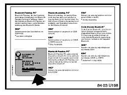

Telematics - BMW Assist or Bluetooth Inoperative Code 73
SI B84 14 07Communication Systems
August 2007
Technical Service
BMW Assist(R) or Bluetooth(R) Inoperative, TCU FC # 73
MODEL
E46 (3 Series) with Premium Package (ZPP) or BMW Assist (SA 639) up to 3/07 production
E53 (X5) with Premium Package (ZPP) or BMW Assist (SA 639) up to 9/06 production
E83 (X3) with Premium Package (ZPP) or BMW Assist (SA 639) up to 3/07 production
E85, E86 (Z4) with Premium Package (ZPP) or BMW Assist (SA 639) up to 4/07 production
SITUATION
^ An approved Bluetooth(R) enabled handset does not connect/bond to the vehicle.
^ BMW Assist is inoperative.
The Telematics Control Unit (TCU) has fault code 73 (Memory Error) stored in fault memory.
CAUSE
Hardware error.
PROCEDURE
In case of a customer complaint that a compatible Bluetooth enabled handset does not connect/bond to the vehicle.
1. Perform a short test using the DIS or GT-1.
2. If the TCU has fault code # 73 (Memory Error) stored in fault memory the TCU, complete the test module. If the test module states to replace the TCU, refer to the TCU replacement Procedure in this bulletin.
In case of a customer complaint that BMW Assist is inoperative:
1. Check the BMW Assist account status on DCSnet. The BMW Assist services expiration date and the TCU activation status can be checked on DCSnet under Service/Vehicle History Inquiry. Refer to SI B02 01 06 (Updated DCSnet Vehicle History Inquiry information on BMW Assist) for more information. If the BMW Assist services contract has expired, the customer must renew their BMW Assist services. Do not proceed until these services are renewed.
2. Perform a short test using the DIS or GT-1.
3. If the TCU has fault code # 73 (Memory Error) stored in fault memory the TCU, complete the test module. If the test module states to replace the TCU, refer to the TCU replacement Procedure in this bulletin.
TCU REPLACEMENT PROCEDURE
1. It is NOT necessary to obtain a Part Replacement Authorization (TeileClearing) for this specific issue. Refer to the Warranty section of this bulletin for more details. Additional information can be found in SI B84 23 05 (Enhanced Support for BMW Assist Telematics Control Unit (TCU) with Bluetooth & CPT9000 Phone Systems).
2. Refer to TIS (RA 84 11...) for the TCU replacement procedure.
3. Before installing the new TCU, remove one copy of the Electronic Serial Number (ESN) label and place it on the repair order for reference during warranty claim entry. You will be asked for the new TCU "ESN" when submitting a claim via DCSnet. Refer to SI B01 10 05 for more details.

4. The second ESN label of the TCU should be affixed over the existing label in the Owner's Manual insert (P/N 01 49 0 157 963).
5. Complete the TCU installation
6. Using Progman V26.01.00 or higher, code the complete vehicle. Refer to SI B09 05 01 "Coding, Individualization and Programming", Procedure E.
7. Test the BMW Assist service for proper operation by placing a test call (press the Roadside Assistance "Wrench" button). Make sure the BMW Assist Response Center has received the correct MIN/MDN/VIN and location of the vehicle. Have the representative update their records as needed.
^ If a TCU is replaced on a vehicle with an inactive BMW Assist account, if a BMW Assist call is made, the call will be routed to an automated system until the TCU is deactivated.
^ For customers who would like to renew BMW Assist services, refer to SI B84 22 05 (Reactivation of BMW Assist Services).
COMPATIBLE HANDSET INFORMATION:
Before the complaint can be addressed, the particular handset must be verified for compatibility with the respective Bluetooth system installed in vehicle (E.g. BMW Assist w/Bluetooth technology, BTUM, ULF). On vehicles equipped with BMW Assist with Bluetooth wireless technology, to confirm whether or not the phone is compatible, visit www.bmwusa.com/bluetooth for a list of handsets that have passed BMW testing for compatibility. Note the following disclaimer on this web site:
^ "This list is provided for reference only. The mobile phones listed here have passed compatibility tests as of the date of testing and meet or exceed minimum standards established by BMW. The list is not a warranty for phone performance or functionality. BMW makes no guarantees or warrantees as to the performance of each phone while connected to your BMW via Bluetooth Wireless Technology. Furthermore, software releases by BMW, the phone supplier or the wireless carrier dated after testing might alter compatibly results. While many phones are offered with Bluetooth Wireless Technology, not all phones support the necessary profiles to work with your BMW. BMW does not guarantee availability or functionality with all wireless carriers. Functions such as synchronizing the address book and transferring a call into or out of the vehicle may function differently from phone to phone".
WARRANTY INFORMATION
Covered under the terms of the BMW New Vehicle Limited Warranty.
Please refer to the latest KSD for all applicable labor operations and allowances.
If the appropriate labor operation is not contained in KSD, then a work time labor operation should be used.
Defect Code 84 11 27 12 00
Part replacement authorization is NOT required. Do NOT submit a TeileClearing PuMA case. A copy of the diagnostic report (short test) including a copy of the test module displaying a diagnostic code stating to replace the TCU must be kept with the Repair Order (RO) and FASTA data must be transmitted. When submitting a warranty claim, please note the following information in the comments section:
^ SI B84 14 07 (TCU FC # 73)
^ Diagnostic code displayed at the completion of the test module for fault code 73

Disclaimer